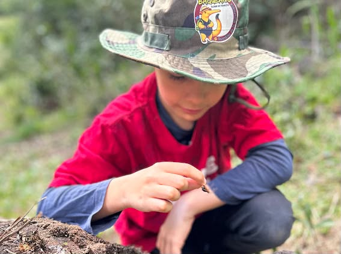
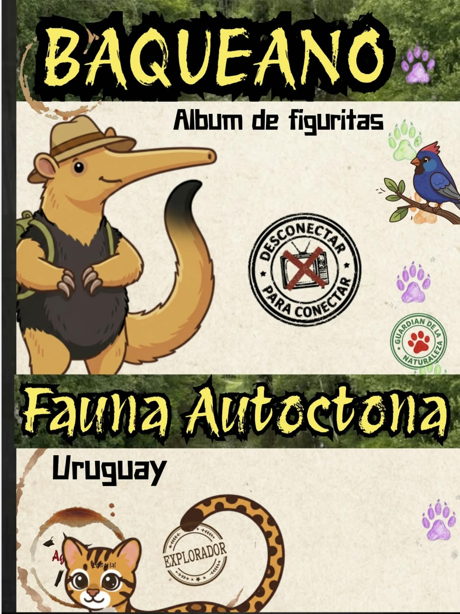
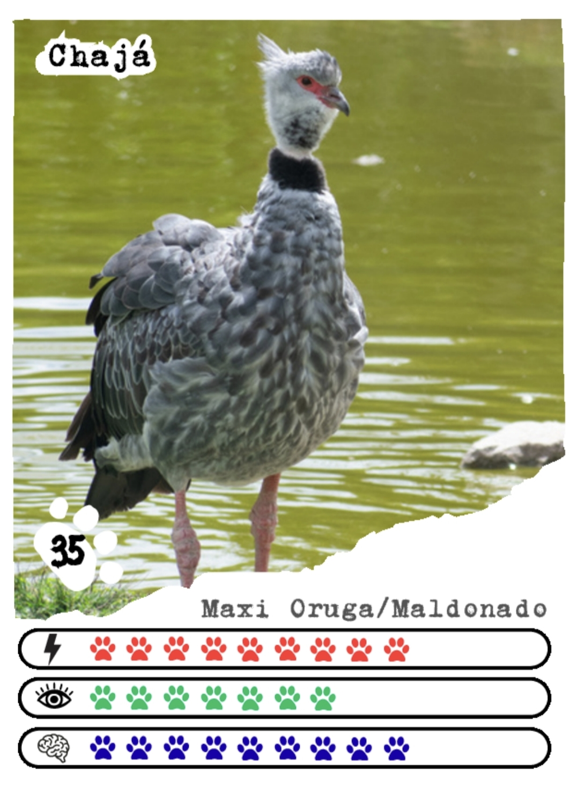
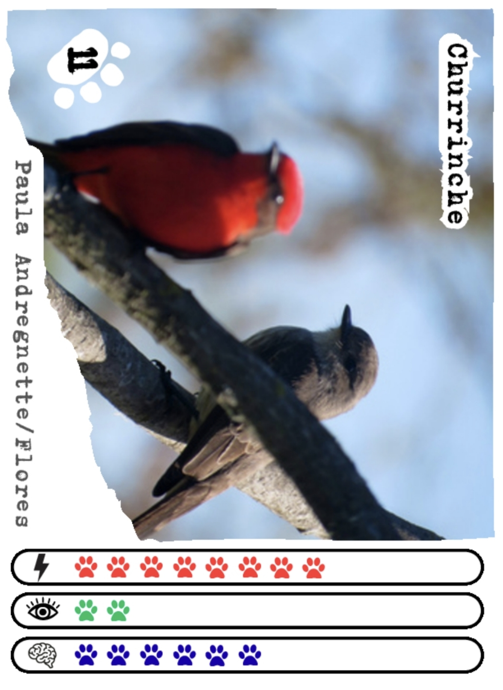
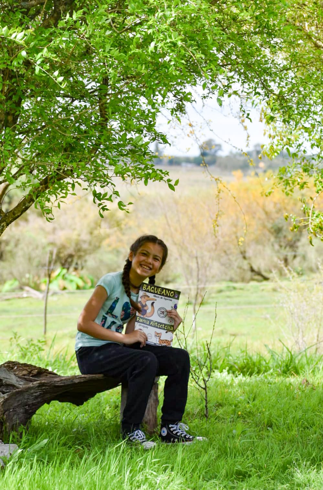
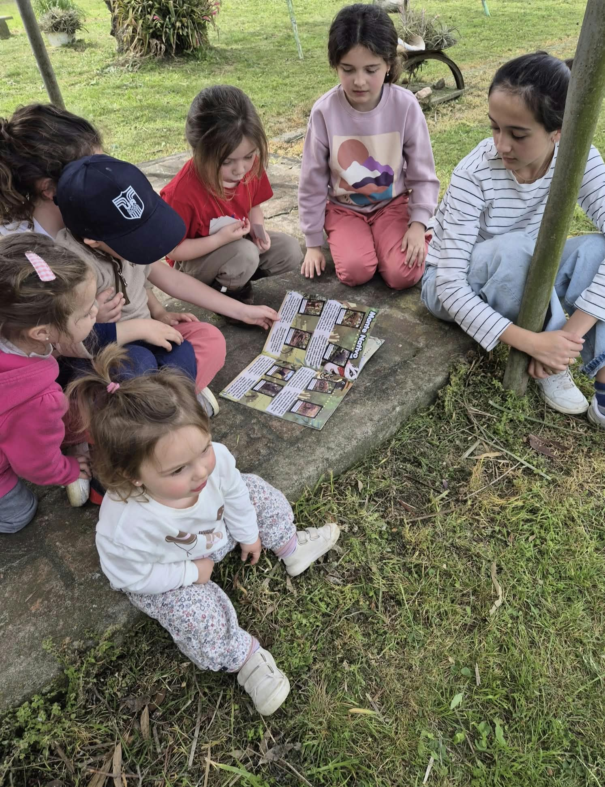
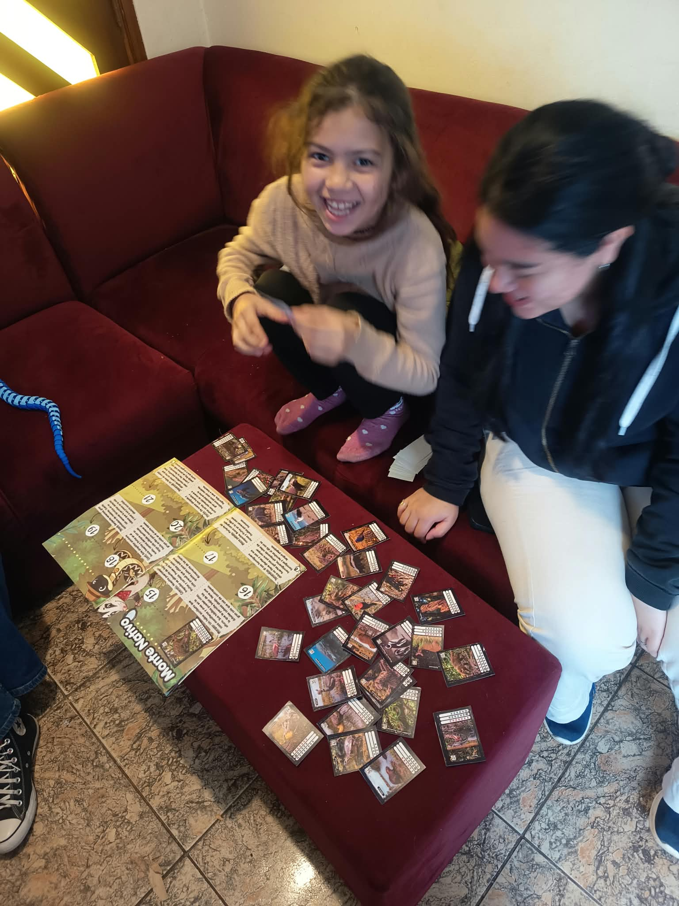

Observar
Fauna de verdad
Fotografías de animales autóctonos para aprender a reconocerlos por sus rasgos, colores y ambientes.
Álbum de figuritas · Uruguay
Una aventura para descubrir animales autóctonos, salir a mirar el monte y aprender en familia. Menos pantalla, más naturaleza.

Una forma distinta de aprender
Baqueano transforma la curiosidad en una colección: cada figurita invita a reconocer especies, comparar sus habilidades y volver a encontrarlas afuera.
Observar
Fotografías de animales autóctonos para aprender a reconocerlos por sus rasgos, colores y ambientes.
Coleccionar
Buscar, cambiar y pegar figuritas vuelve el conocimiento una experiencia que se construye de a poco.
Compartir
El álbum abre conversaciones entre gurises, familias y educadores, adentro y afuera del salón.
Una colección para explorar
El álbum combina fotografía, ilustración y datos breves para que cada especie se vuelva fácil de recordar. Las huellas de color ayudan a comparar energía, vista e inteligencia.
Fotos reales de fauna autóctona
Fichas visuales para comparar
Escenarios del monte uruguayo



Ya está pasando
En el monte, en casa o en ronda: Baqueano convierte la búsqueda de figuritas en una excusa para mirar, preguntar y compartir.



Desconectarse un rato para volver a conectar con lo que vive cerca.
El espíritu Baqueano
Comunidad Baqueana
Estamos preparando los canales oficiales para familias, educadores y organizaciones. Muy pronto vas a poder encontrarlos acá.